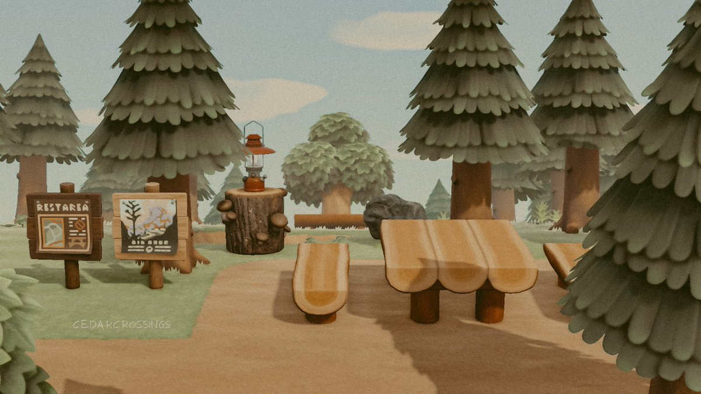
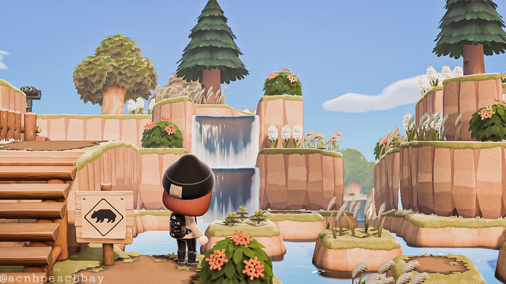

Island 4: Patagonia
Dream Address: N/A
Patagonia is my most recent island that I JUST started, so not much to see here yet! I think I'm going to go for a national park theme and go back to doing more nature-based aesthetics. Because I made Gardenia pre-2.0 update, I never got the chance to use all of the new nature items in the game, like the baobab tree, the dead tree, cacti, wheat grass, vegetables, and more.
 Here are some photos I am using for inspiration. I get inspo from other Animal Crossing content creators all the time. People in the ACNH online community are so creative, and I love the culture of making things and sharing them with people equally passionate about this game. Part of my love for this game is my love for the community and the excitement we all share. I can't wait to see where my next island goes from here.